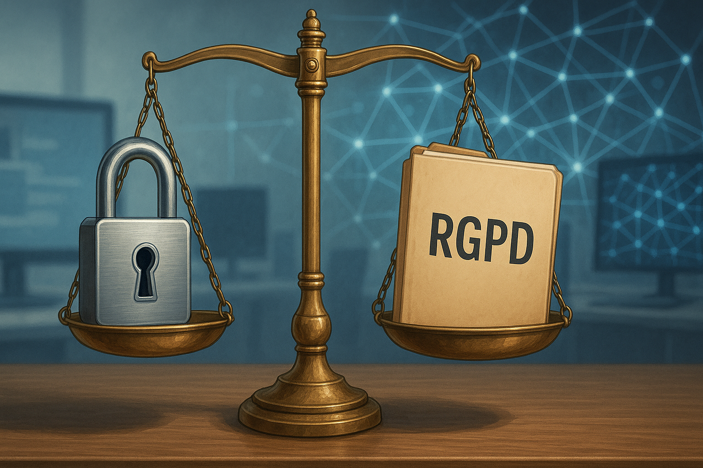
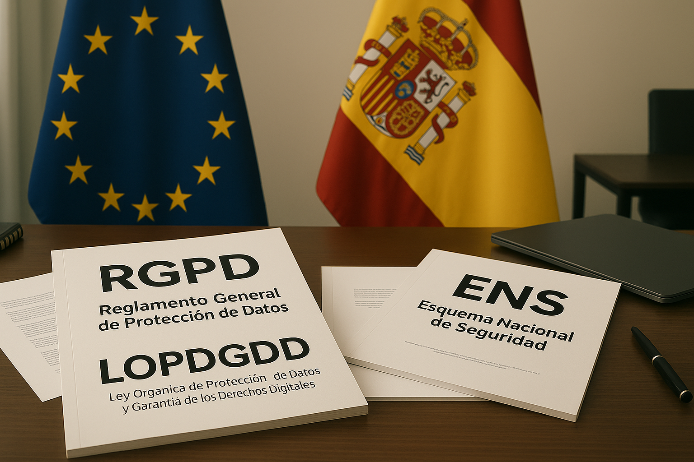
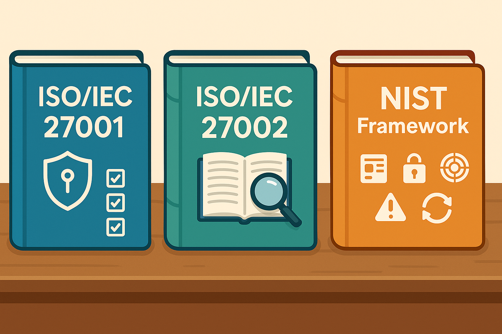
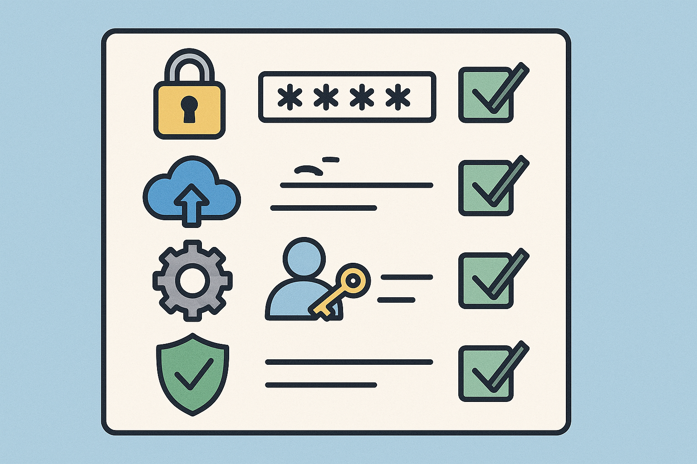
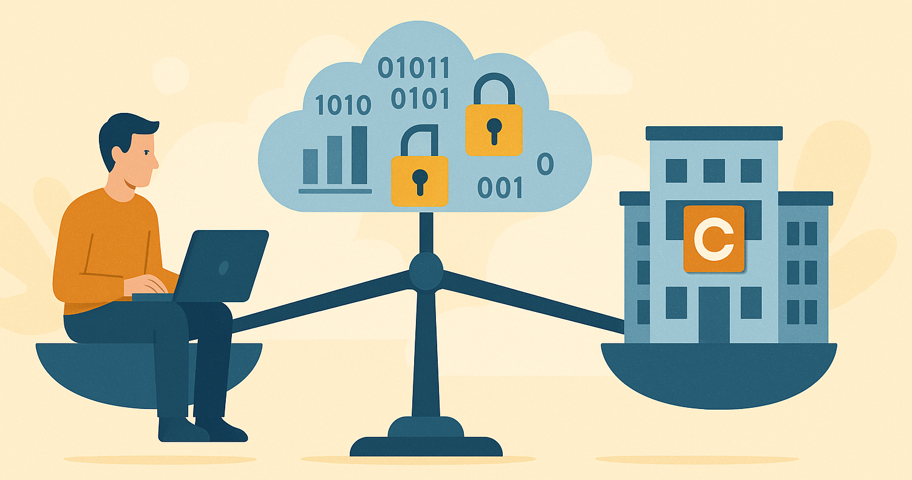

Tema 10 - Normativas y legislación1. Introducción2. Marco legal en España y Europa🧾 RGPD (Reglamento General de Protección de Datos)🧾 LOPDGDD (Ley Orgánica de Protección de Datos y Garantía de Derechos Digitales)🧾 ENS (Esquema Nacional de Seguridad)3. Normas internacionales relevantes📘 ISO/IEC 27001📘 ISO/IEC 27002📘 NIST4. Políticas internas de seguridad en las empresas¿Qué incluyen estas políticas?¿Quién las define?5. Buenas prácticas recomendadas📋 Buenas prácticas básicas📋 Buenas prácticas organizativas6. Responsabilidades legales del usuario y la empresa⚖️ ¿Qué debe hacer la empresa?👤 ¿Y el trabajador?7.🧪Test Tema 10 - Normativas y legislación

En seguridad informática no basta con saber cómo proteger un sistema o qué herramientas usar. También es fundamental conocer el marco legal que regula el tratamiento de los datos, la protección de la información y las responsabilidades tanto de usuarios como de empresas.
Important
En el mundo laboral, no cumplir con la normativa no solo puede poner en riesgo la seguridad, sino que también puede suponer multas importantes, sanciones administrativas o incluso responsabilidad penal.
Este tema cierra el curso abordando tres pilares esenciales:
Normativas legales, que son de obligado cumplimiento (como el RGPD).
Normas técnicas o estándares, que aunque no siempre son obligatorios, son altamente recomendables (como la ISO 27001).
Buenas prácticas, que ayudan a aplicar la seguridad de forma coherente en el día a día.
Tip
Este tema no busca que memorices leyes, sino que entiendas lo básico y sepas dónde acudir o qué aplicar en función del contexto.
El primer paso para entender la relación entre seguridad informática y legislación es conocer qué normas nos afectan directamente en el entorno laboral. En España y en la Unión Europea existen leyes y reglamentos específicos que regulan el tratamiento de los datos personales, la seguridad de los sistemas y la responsabilidad en caso de incidentes.

Es una normativa europea de obligado cumplimiento desde 2018. Su objetivo es proteger la privacidad de las personas y darles control sobre el uso de sus datos.
Note
Se aplica a cualquier empresa o entidad que trate datos personales de ciudadanos de la Unión Europea, independientemente de dónde esté ubicada.
Algunos principios clave del RGPD:
Consentimiento claro e informado.
Derecho a acceder, rectificar y borrar los datos.
Obligación de informar sobre brechas de seguridad.
Evaluaciones de impacto en privacidad (cuando sea necesario).
Tip
Multa récord a Google por incumplir el RGPD
En 2019, la empresa Google fue sancionada en Francia con una multa de 50 millones de euros por no proporcionar información clara sobre el uso de datos y no obtener un consentimiento válido para personalizar anuncios.
La CNIL (autoridad francesa de protección de datos) consideró que Google violaba el principio de transparencia del RGPD y forzaba a los usuarios a aceptar configuraciones complejas sin una opción clara de rechazo.
Esta sanción fue un aviso claro para las grandes tecnológicas: el RGPD se aplica a todos, sin excepciones.
Es la adaptación española del RGPD, y añade ciertos elementos propios, como el derecho a la desconexión digital en el ámbito laboral o el uso de datos biométricos.
Tip
Caso real: Worldcoin obligada a borrar datos biométricos en España
En diciembre de 2024, la empresa Worldcoin, conocida por escanear el iris de miles de personas a cambio de criptomonedas, fue obligada a eliminar todos los datos biométricos recogidos en España.
La Agencia Española de Protección de Datos (AEPD), en colaboración con la autoridad de protección de datos de Baviera (BayLDA), dictaminó que Worldcoin no garantizaba medidas de seguridad adecuadas ni recababa un consentimiento válido por parte de los usuarios.
La resolución se apoyó en el Reglamento General de Protección de Datos (RGPD), y supuso una advertencia clara a todas las empresas que usan tecnologías sensibles como datos biométricos: la innovación no está por encima de la ley.
Es un marco legal español que establece requisitos de seguridad para las administraciones públicas y empresas que prestan servicios a estas. Afecta, por ejemplo, a proveedores de software, consultoras, etc.
Important
Si trabajas en proyectos públicos o usas servicios relacionados con la administración, el cumplimiento del ENS puede ser obligatorio.
Warning
Cumplimiento del ENS en administraciones locales: avances y desafíos
Según datos de 2025, el 87% de los ayuntamientos catalanes utilizan soluciones certificadas conforme al Esquema Nacional de Seguridad (ENS). Sin embargo, la certificación integral del ENS sigue siendo un reto pendiente para muchas entidades locales, especialmente aquellas con recursos limitados.
Para facilitar el cumplimiento, el Centro Criptológico Nacional (CCN) ha definido un perfil de cumplimiento con 35 controles clave, ayudando a los ayuntamientos a avanzar hacia la certificación.
🔗 Informe sobre el cumplimiento del ENS en administraciones locales

Además de las leyes nacionales y europeas, existen normas técnicas internacionales que no son obligatorias por ley, pero que sirven como referencia para implantar buenas prácticas de seguridad en cualquier organización. Las más importantes son:
Es una norma internacional que especifica cómo establecer, implementar, mantener y mejorar un Sistema de Gestión de la Seguridad de la Información (SGSI).
Note
No es una ley, pero muchas empresas la aplican o se certifican para demostrar que gestionan adecuadamente la seguridad de su información.
Los puntos clave que exige esta norma:
Evaluación de riesgos.
Definición de controles de seguridad.
Mejora continua del sistema.
Formación y concienciación del personal.
Es un complemento de la anterior. Proporciona una guía detallada de buenas prácticas para aplicar los controles de seguridad definidos en la ISO 27001.
Tip
Si la ISO 27001 te dice “qué” hay que hacer, la ISO 27002 te explica “cómo” hacerlo.
El National Institute of Standards and Technology es una institución estadounidense que publica guías y marcos de referencia para la ciberseguridad, muy utilizados a nivel internacional, sobre todo en grandes organizaciones.
Uno de los más conocidos es el NIST Cybersecurity Framework, que define cinco funciones clave:
Identificar
Proteger
Detectar
Responder
Recuperar
Important
Aunque el NIST no es obligatorio en Europa, muchas empresas lo usan como modelo complementario para organizar su seguridad.
Además de cumplir con leyes y normas externas, las empresas deben desarrollar sus propias políticas de seguridad. Estas políticas recogen las reglas internas que deben seguir todos los trabajadores para proteger la información, los sistemas y los datos corporativos.
Note
Una política de seguridad es como el reglamento interno de una empresa para todo lo relacionado con la ciberseguridad.
Reglas sobre el uso de contraseñas.
Normas para el acceso remoto o desde dispositivos personales.
Protocolos de actuación ante incidentes o sospechas.
Requisitos de actualización de software y antivirus.
Formación obligatoria en seguridad para el personal.
Important
No sirve de nada tener buenas herramientas si el comportamiento del personal no sigue unas normas claras.
Normalmente las crea el departamento de informática o seguridad, en colaboración con dirección y recursos humanos.
En empresas pequeñas, puede ser simplemente un documento básico que todos firman y deben respetar.
Tip
Estas políticas ayudan a proteger la empresa y a sus empleados, y pueden servir como prueba legal en caso de incidentes.

Además de cumplir leyes y seguir estándares, hay una serie de buenas prácticas que toda empresa o usuario debería aplicar para mantener un entorno digital seguro. No son obligatorias, pero son sentido común en ciberseguridad.
Contraseñas seguras y únicas, con autenticación en dos pasos siempre que sea posible.
Actualizaciones automáticas de sistemas y programas.
No usar cuentas de administrador para tareas diarias.
Evitar instalar software no autorizado o procedente de fuentes dudosas.
Usar VPN en redes públicas o conexiones remotas.
Bloquear el equipo cuando no se esté usando.
Formarse regularmente en ciberseguridad.
Definir políticas de seguridad claras y accesibles para todos.
Separar funciones entre usuarios: no todo el mundo necesita acceso a todo.
Establecer copias de seguridad periódicas y probarlas regularmente.
Tener un plan de respuesta a incidentes para saber qué hacer si algo falla.
Auditar el sistema de forma periódica.
Note
Las buenas prácticas no son un “extra”. Son el pegamento que une todo lo aprendido a lo largo del curso: si no se aplican bien, todo lo demás se tambalea.

La seguridad informática no es solo una cuestión técnica: también implica responsabilidades legales. Tanto las empresas como los trabajadores pueden enfrentarse a consecuencias si no se respetan las normas que regulan el tratamiento de datos y el uso de sistemas informáticos.
Garantizar la seguridad de los sistemas y de los datos personales.
Cumplir con normativas como el RGPD, LOPDGDD o el ENS.
Establecer políticas de seguridad internas y asegurarse de que se aplican.
Notificar cualquier brecha de seguridad en un plazo máximo de 72 horas (según RGPD).
Formar al personal para evitar negligencias.
Warning
Si una empresa no protege adecuadamente los datos personales de sus clientes o empleados, puede enfrentarse a multas de hasta 20 millones de euros o el 4% de su facturación anual, según el RGPD.
Cumplir con las normas de seguridad internas.
Usar correctamente los dispositivos y accesos proporcionados por la empresa.
No instalar software sin autorización ni acceder a datos sin permiso.
Avisar inmediatamente si detecta un incidente o sospecha de ataque.
No compartir contraseñas ni credenciales.
Important
Aunque no seas informático, eres responsable de lo que haces con la información de la empresa. Saltarte las normas puede suponer desde una sanción interna hasta un despido, o incluso responsabilidades legales si hay daños.
1. ¿Qué normativa europea regula el tratamiento de datos personales y es de obligado cumplimiento desde 2018?
a. LOPDGDD
b. ENS
c. ISO 27001
d. RGPD
2. ¿Cuál de las siguientes afirmaciones es cierta sobre la LOPDGDD?
a. Es una norma internacional.
b. Deroga por completo el RGPD.
c. Es la adaptación española del RGPD.
d. Solo se aplica a empresas tecnológicas.
3. ¿Qué es el Esquema Nacional de Seguridad (ENS)?
a. Una política interna para usuarios finales.
b. Una norma europea de protección de datos.
c. Un conjunto de medidas de seguridad para el sector público en España.
d. Un reglamento para uso exclusivo de bancos.
4. ¿Cuál de estas normas describe un Sistema de Gestión de Seguridad de la Información?
a. LOPDGDD
b. NIST Framework
c. ISO/IEC 27001
d. ISO 9001
5. ¿Cuál es la función principal del NIST Cybersecurity Framework?
a. Medir la velocidad de los antivirus.
b. Guiar la organización de la ciberseguridad en cinco funciones clave.
c. Establecer políticas de contratación.
d. Definir leyes de privacidad de datos biométricos.
6. ¿Cuál de estas es una buena práctica recomendada en ciberseguridad?
a. Usar la misma contraseña en todos los servicios.
b. Desactivar las actualizaciones automáticas.
c. Aplicar la autenticación multifactor.
d. Utilizar software de fuentes desconocidas.
7. ¿Qué responsabilidad legal tiene un trabajador si ignora las normas de seguridad internas?
a. Ninguna, es solo responsabilidad de la empresa.
b. Solo se le restringe el acceso a Internet.
c. Puede enfrentarse a sanciones o incluso despido.
d. Puede recibir una felicitación si nada ocurre.
d
c
c
c
b
c
c